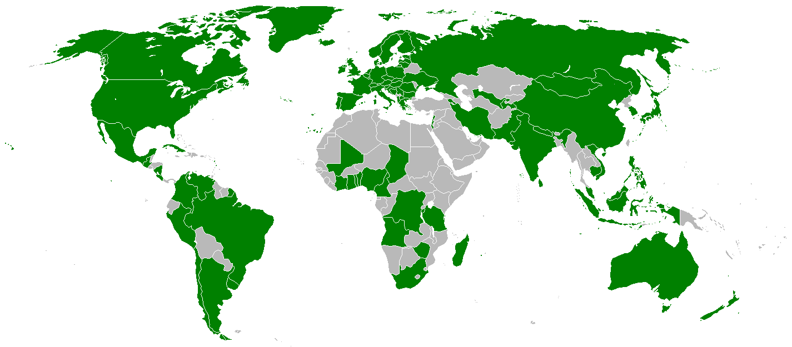
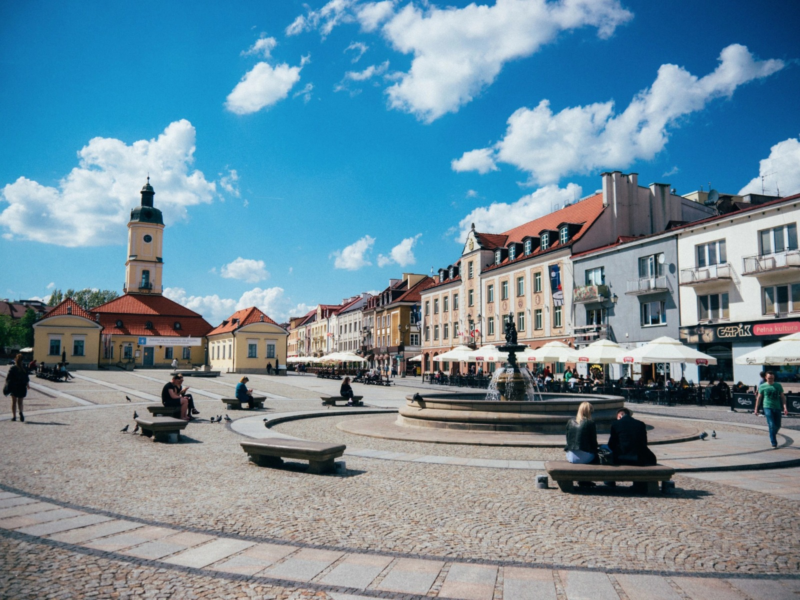
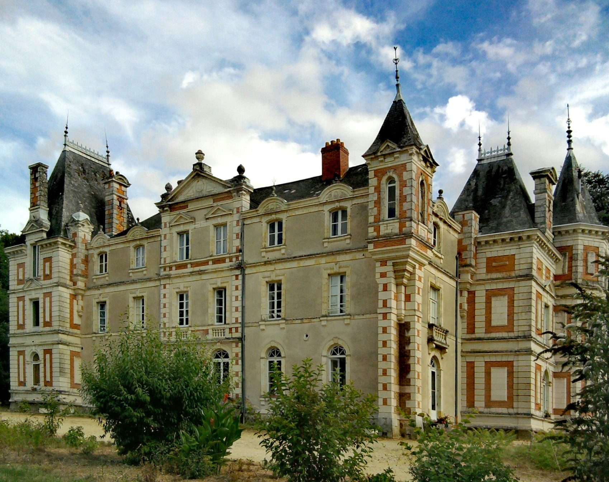
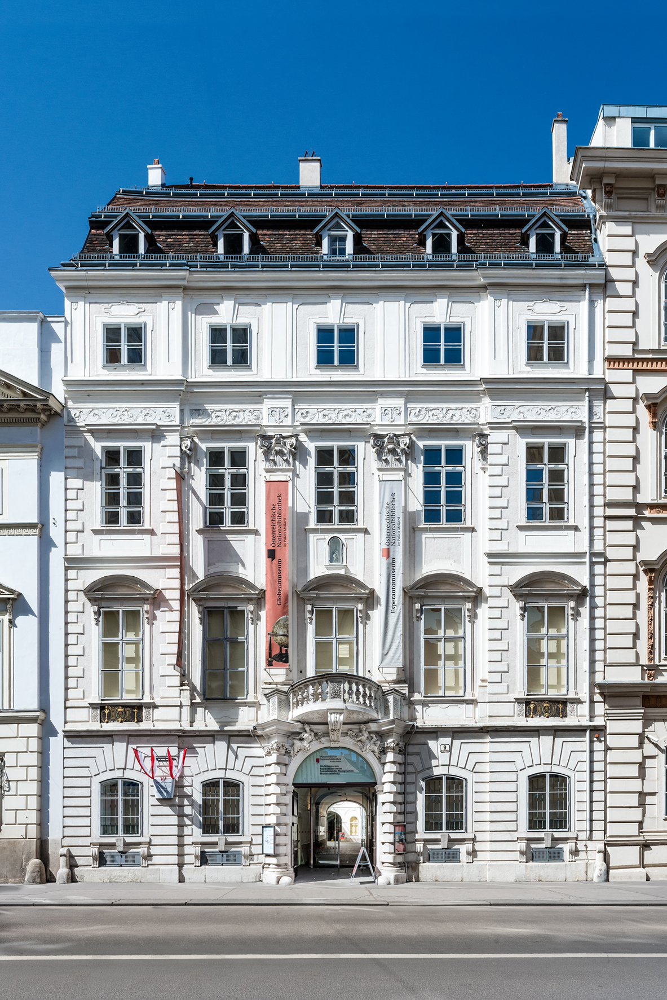
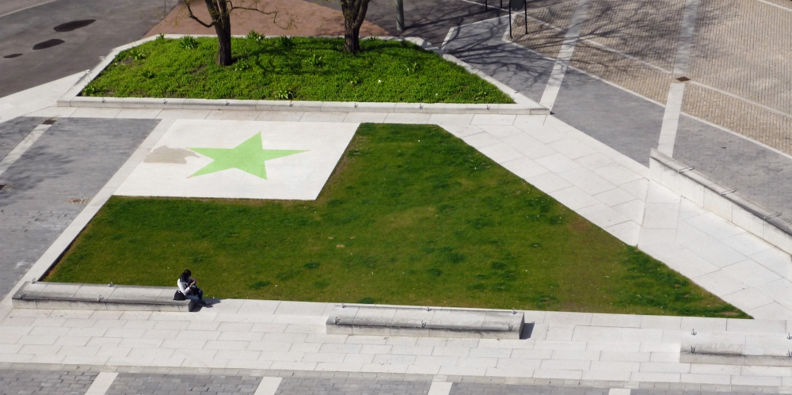

Esperantujo o Esperantio es la comunidad esperantista; la comunidad de hablantes del esperanto y su cultura, así como los lugares e instituciones donde se usa el idioma. El término se utiliza "como si fuera un país".
Aunque no ocupa su propia área de la superficie terrestre, se puede decir que constituye los 120 países que tienen su propia asociación nacional de Esperanto.
Esperantujo incluye cualquier lugar físico donde se reúnan los hablantes de esperanto, como reuniones de esperanto o redes virtuales. A veces se dice que está en todas partes donde se conectan los hablantes de esperanto.
Aunque Esperantujo no tiene su propio territorio oficial, varios lugares en todo el mundo son propiedad de organizaciones de Esperanto o están permanentemente conectados con el idioma Esperanto y su comunidad:
- Białystok, el lugar de nacimiento de L. L. Zamenhof (el creador de Esperanto), y mucho el lugar que lo inspiró a crear un lenguaje auxiliar internacional y facilitar la comunicación a través de barreras lingüísticas. 
- La ciudad alemana Herzberg am Harz es el hogar de la Interkultura Centro Herzberg, y, desde el 12 de julio de 2006, se anuncia como "Ciudad de Esperanto" (Esperanto-urbo). Hay señales y punteros bilingües, tanto en alemán como en Esperanto.
- Kastelo Greziljono en Francia es propiedad de la organización sin fines de lucro "Casa Cultural de Esperanto" (Kulturdomo de Esperanto), que acoge varios eventos de Esperanto en el verano y durante las vacaciones escolares francesas. 
- El Museo Esperanto y Colección de Lenguas Planificadas, departamento de la Biblioteca Nacional de Austria, es un museo para Esperanto y otros idiomas construidos, ubicado en Viena. 
- Los objetos Zamenhof-Esperanto (ZEO-j) se pueden encontrar en todo el mundo. Estos son lugares y objetos —como calles, memoriales, espacios públicos, edificios, vehículos, o incluso características geográficas— que se nombran o están vinculados al lenguaje, su creador L. L. Zamenhof, o su comunidad de oradores. 

A juzgar por los miembros de la Asociación Mundial de Esperanto, los países con más esperantohablantes son (en orden descendente): Brasil, Alemania, Japón, Francia, Estados Unidos, China, Italia.
Fuente